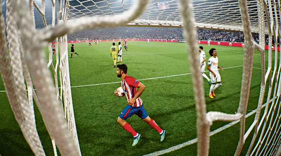

leibesübungen
freitag, 18. mai 2018

So ein Titel nach so einer Saison
Mit 3:0 schlägt Atlético Madrid im Europa-League-Finale Olympique Marseille. Das versöhnt mit einem schwierigen Jahr. Doch Griezmann und Torres gehen
Florian Haupt
Aufstieg mit allen Mitteln – sogar mit Gelassenheit
Drittligist Karlsruher SC empfängt heute den FC Erzgebirge Aue zum Relegationsauftakt. Die Badener brauchen die Rückkehr in die Zweite Liga
Christoph Ruf
was alles nicht fehlt